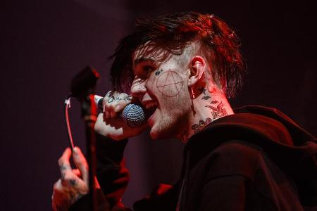
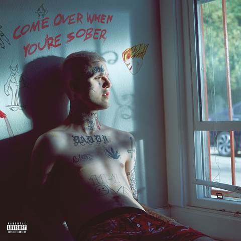
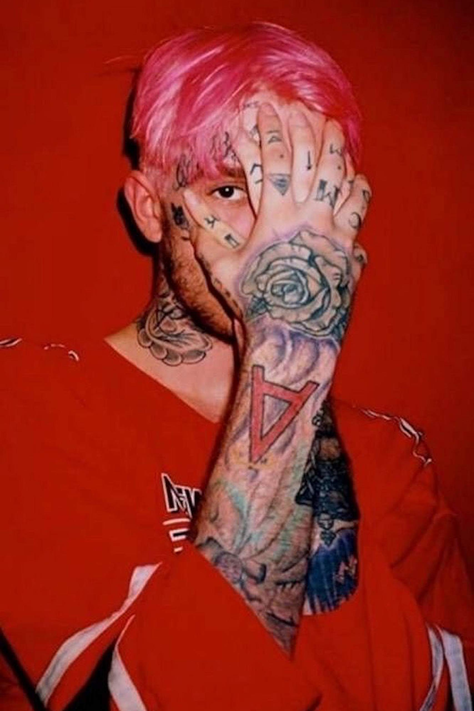

LIL PEEP

.jpg)
.jpg)


Lil Peep, el rapero y cantante estadounidense que mezcló el emo, el punk y el hip-hop, dejando una gran huella en la música antes de su fallecimiento en 2017:
-
Falling Down (con XXXTentacion) – ≈1 487 M reproducciones
-
Spotlight – ≈463 M reproducciones
-
Benz Truck – ≈411 M reproducciones
-
Awful Things (feat. Lil Tracy) – ≈345 M reproducciones
Contexto emocional de la playlist
-
Melancolía y vulnerabilidad: Star Shopping, Save That Shit y white tee expresan temas de ansia emocional, amor e introspección.
-
Colaboraciones significativas: Falling Down (junto a XXXTentacion) y Awful Things (con Lil Tracy), que reflejan su conexión con otros artistas del movimiento emo‑rap.
-
Estética sonora característica: Benz Truck, witchblades y nuts dan ese toque de fusión entre trap, emo y guitarras suaves.
Recuento total de reproducciones
Según estimaciones globales combinadas (Spotify y otros DSP), Lil Peep supera los ≈22 mil millones de reproducciones en todas las plataformas
Síntesis rápida:
-
Su canción más escuchada es Falling Down con casi 1.5 mil millones de streams.
-
Star Shopping fue su primer éxito en alcanzar 1 000 M en Spotify
-
Nuts, lanzada originalmente en 2015, ha resurgido y acumulado ≈674 M, incluso viral en TikTok
El legado de Lil Peep (Gustav Elijah Åhr) es profundo y duradero, especialmente considerando su corta vida. A pesar de haber fallecido en 2017 a los 21 años, su influencia en la música y la cultura juvenil sigue creciendo. Aquí te presento los principales aspectos de su legado:
1. Pionero del emo rap
Lil Peep fue una de las figuras clave en fusionar:
-
Emo, punk rock y pop punk (como Taking Back Sunday, My Chemical Romance)
-
Con trap, lo-fi y hip hop underground
Este cruce de géneros dio origen a un subgénero que redefinió la música alternativa de los 2010s y abrió puertas a artistas como Juice WRLD, XXXTentacion, Trippie Redd y The Kid LAROI.
2. Vulnerabilidad emocional en el rap
Lil Peep hablaba abiertamente sobre:
-
Depresión, ansiedad, consumo de drogas, y suicidio
-
Relaciones tóxicas y desamor
-
Sensaciones de vacío y soledad
Esta honestidad emocional rompió estigmas sobre la salud mental, especialmente entre jóvenes y dentro de una industria donde estos temas eran tabú.
3. Icono estético y cultural
-
Su estilo visual combinaba lo gótico, emo, punk y streetwear.
-
Llevaba tatuajes faciales y ropa alternativa que rompía con las normas del rap tradicional.
-
Inspiró una aesthetic que aún se ve en redes sociales, moda urbana, y movimientos creativos juveniles.
4. Movimiento DIY y SoundCloud
-
Fue parte de una generación que hizo música sin disqueras, desde su laptop en casa.
-
Subía sus temas a SoundCloud, donde rápidamente formó una base de fans.
-
Demostró que los artistas independientes podían triunfar sin grandes sellos, solo con internet y autenticidad.
5. Símbolo generacional y culto póstumo
-
Tras su muerte, su música se volvió aún más relevante.
-
Se publicaron álbumes póstumos como Come Over When You're Sober Pt. 2 y Everybody’s Everything.
-
Sus fans lo consideran un mártir musical, una figura trágica que habló por una juventud rota.
6. Impacto en salud mental y comunidad LGBTQ+
-
Peep se declaró abiertamente bisexual, rompiendo barreras en un género históricamente machista.
-
Sus letras ayudaron a muchos jóvenes a sentirse comprendidos y menos solos en sus luchas personales.
En resumen:
Lil Peep cambió el panorama musical al:
-
Combinar géneros marginados,
-
Hablar con honestidad sobre el dolor,
-
Romper barreras sociales, y
-
Crear comunidad a través del arte.
Su legado no solo vive en sus canciones, sino en una generación que aprendió que sentir está bien.